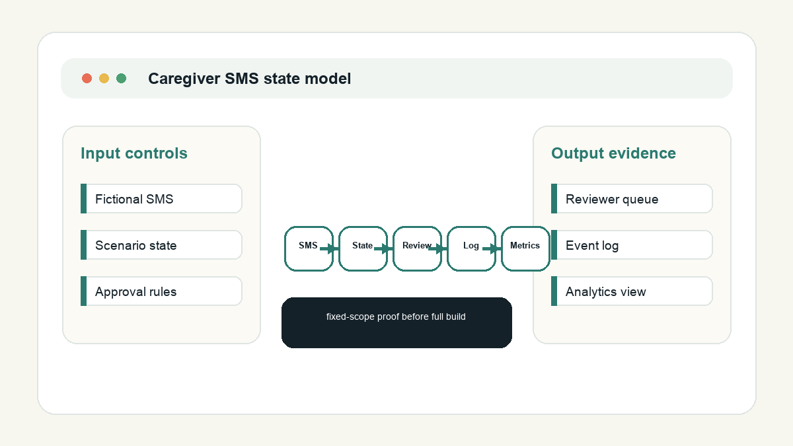
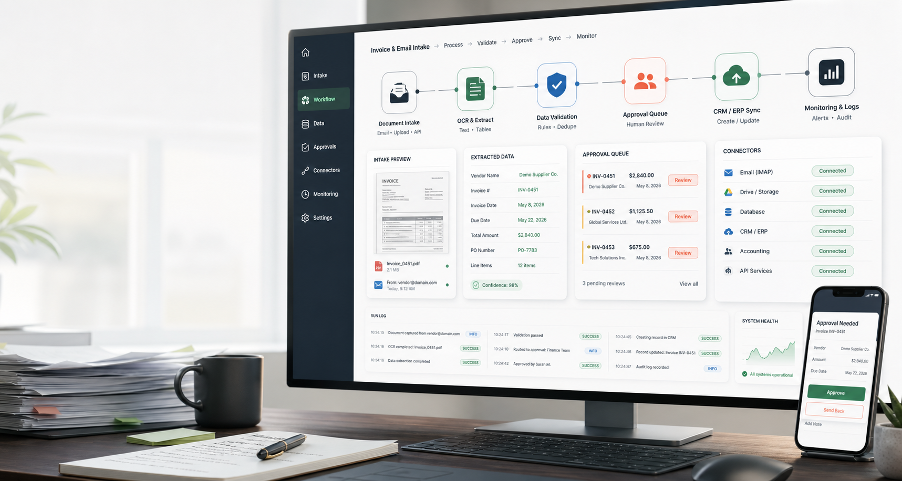
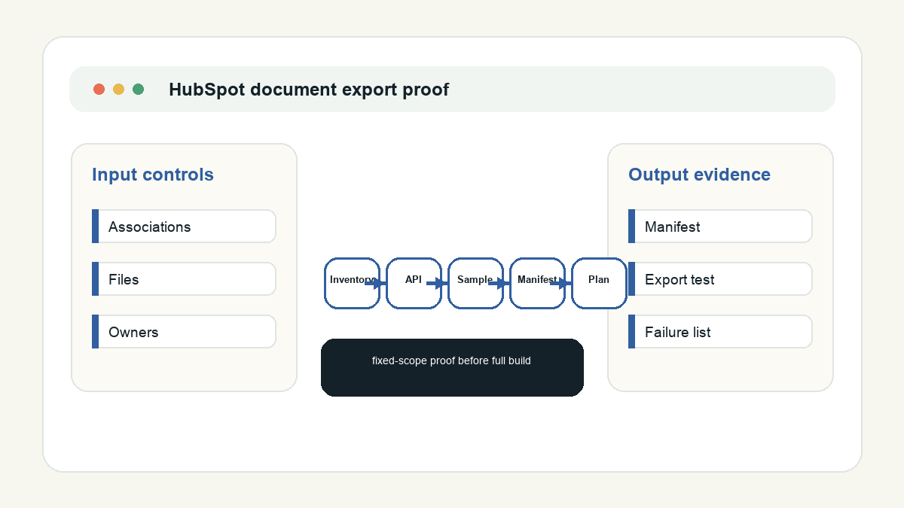

SMS workflow architecture
State model and integration plan for Bubble, Supabase, Make, Twilio, Claude, and Slack approval handling.
- State transitions
- Approval gates
- Failure and retry notes
Workflow recovery portfolio
I focus on narrow workflow failures where a team already has tools in place, but needs the map, test cases, recovery path, or first working slice. The examples below use public or synthetic artifacts only.

State model and integration plan for Bubble, Supabase, Make, Twilio, Claude, and Slack approval handling.

Workflow map, payload assumptions, edge cases, and runbook structure for automation teams and agencies.

Bounded proof package for teams moving CRM-attached files into another system without losing associations.